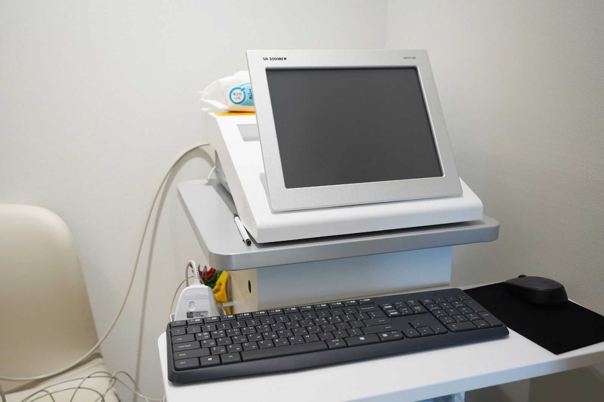
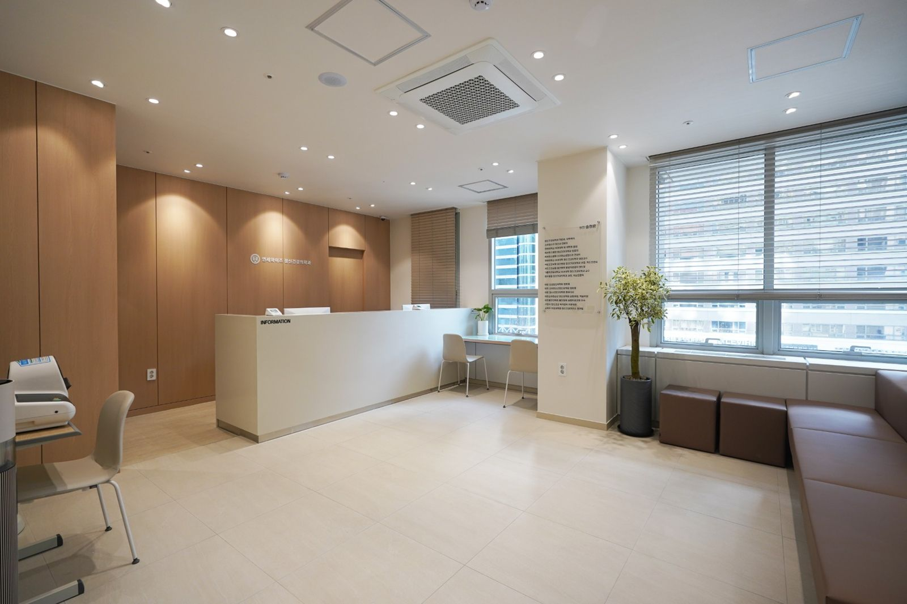
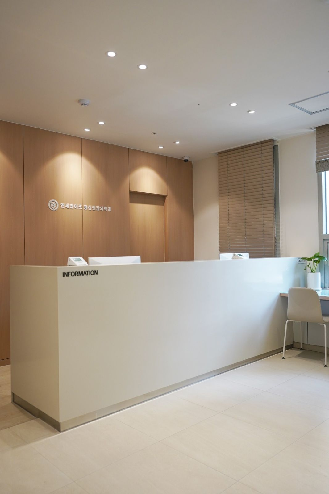
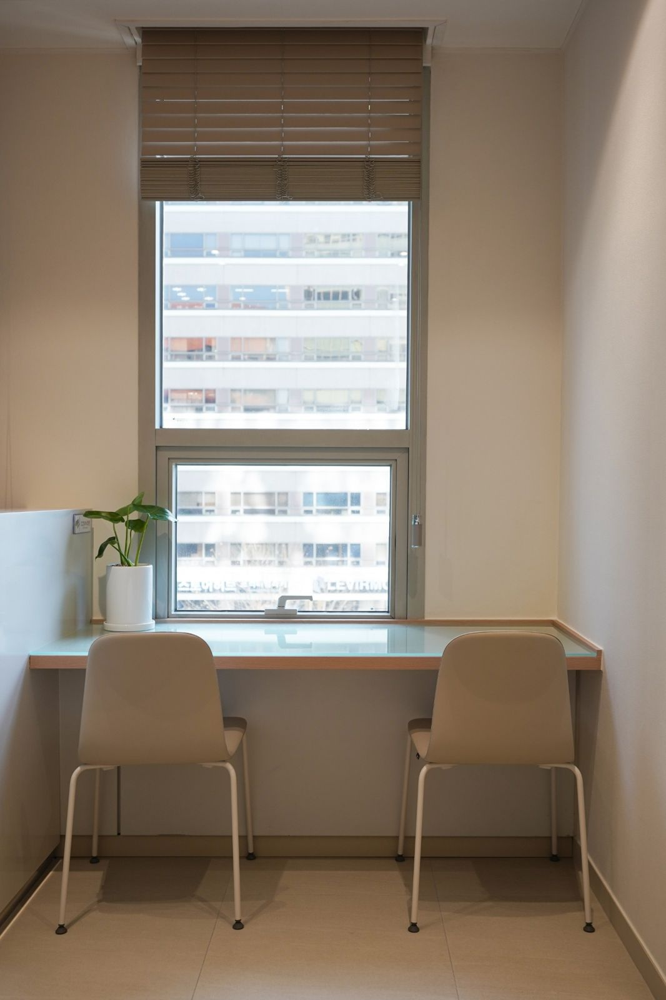

충분히 듣는 진료
마음의 어려움은 짧은 문진만으로 다 드러나지 않습니다. 지금 겪고 있는 일과 지나온 이야기를 충분히 듣는 것에서 진료를 시작합니다.
진료 시간
평일 10:30 ~ 19:00 · 토 10:00 ~ 14:00
목·일·공휴일 휴진
위치
선릉역 9번 출구 OK저축은행 건물
리치타워 5층
진료 대상
영유아 · 소아청소년 · 성인
가족 상담
ABOUT
빠른 처방보다 정확한 이해가 먼저라고 믿습니다.
증상 너머의 사람과 그 사람이 살아가는 환경을 함께 봅니다.
마음의 어려움은 짧은 문진만으로 다 드러나지 않습니다. 지금 겪고 있는 일과 지나온 이야기를 충분히 듣는 것에서 진료를 시작합니다.
대학병원에서 오랫동안 임상과 연구를 이어 온 경험을 바탕으로, 필요한 검사와 객관적인 평가를 통해 정확하게 진단합니다.
특히 아이와 청소년의 치료는 가정과 학교의 이해가 함께할 때 힘을 얻습니다. 부모님과 꾸준히 소통하며 치료 방향을 함께 정합니다.
DOCTOR
“진료실에 들어오기까지 많은 용기가 필요했을 거예요. 그 마음을 소중히 여기며, 가장 편안한 속도로 함께 걸어가겠습니다.”
현재
이전
ADHD, 틱·뚜렛 장애, 자폐스펙트럼, 발달지연, 청소년 우울과 자살 예방 등 소아청소년 정신건강 분야에서 꾸준히 연구해 왔습니다.
CARE
연령과 상황에 따라 필요한 진료가 다릅니다. 어떤 고민이든 편하게 말씀해 주세요.
객관적인 평가를 바탕으로 진단과 치료 계획을 세웁니다.


SPACE
따뜻한 나무 결과 자연광이 드는 공간에서
긴장을 내려놓고 이야기를 시작하세요.



HOURS
원활한 진료를 위해 방문 전 예약을 권해 드립니다.
| 월요일 | 10:30 ~ 19:00 |
|---|---|
| 화요일 | 10:30 ~ 19:00 |
| 수요일 | 10:30 ~ 19:00 |
| 목요일 | 휴진 |
| 금요일 | 10:30 ~ 19:00 |
| 토요일 | 10:00 ~ 14:00 점심시간 없음 |
| 일요일 · 공휴일 | 휴진 |